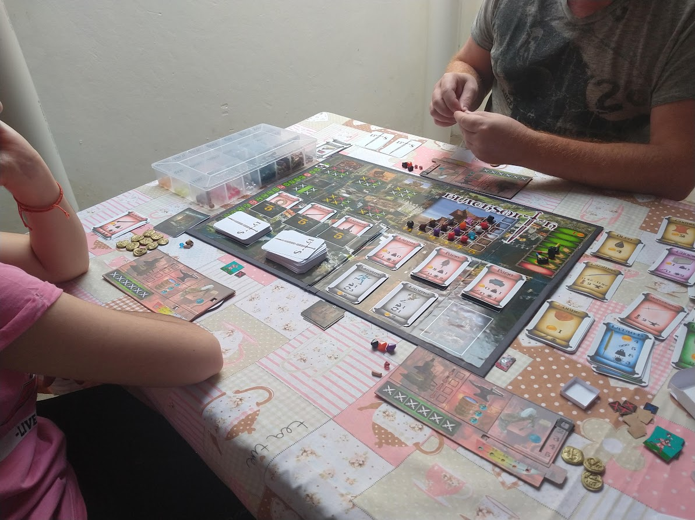
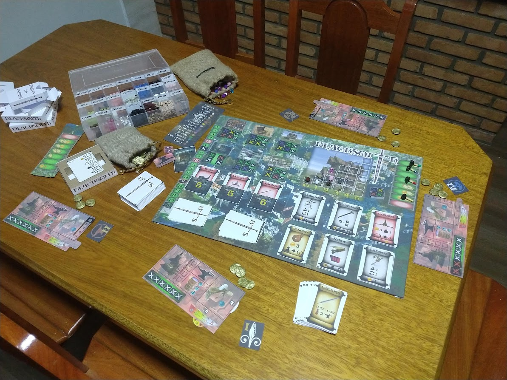

O Projeto
A Grande Guerra acabou, mas a paz exige lâminas afiadas. O Rei convocou os maiores mestres ferreiros do reino para uma competição épica na capital, com a duração de exatos 20 turnos. O grande vencedor não apenas receberá o título de Ferreiro Real, mas também um prêmio lendário que promete segurança vitalícia e férias eternas nas cobiçadas Ilhas de Bahamas.
Em Blacksmith, você assume o controle do seu próprio tabuleiro de ferraria e precisa provar que é o melhor. O objetivo não é simplesmente forjar qualquer arma, mas criar uma verdadeira obra-prima. Para vencer, sua espada final será avaliada pelo Grande Juiz Real em quatro rigorosos atributos: a Resistência do metal, a Beleza dos adornos, a Afiação da lâmina e, o mais desafiador de todos, o Equilíbrio perfeito de peso entre todas as partes.
O jogo é um "Eurogame" de gerenciamento de recursos e alocação de trabalhadores com um toque realista de metalurgia. Durante a partida, você precisará:
- Extrair recursos: Vá à Mina contando com a sorte e a precisão para encontrar desde o simples Cobre até o valioso Titânio ou pedras preciosas.
- Controlar a Fornalha: Monitore rigorosamente os níveis de calor, alimentando-a com madeira ou carvão, pois ligas nobres exigem temperaturas altíssimas.
- Dominar a Têmpera: Decida entre água ou óleo para garantir que o choque térmico dê a resistência perfeita ao seu aço.
Mas a capital é cheia de tentações e trapaças. Além do mercado oficial, você cruzará com o Caixeiro Viajante e o Alquimista Vagante. Através deles, é possível contratar ajudantes, lapidar Runas místicas para encantar sua espada, ou até mesmo adquirir poções duvidosas e contratar ladrões para sabotar a oficina dos seus concorrentes.
Prepare seu martelo. O relógio está correndo, o fogo está ardendo e o Rei não aceita falhas.
Bastidores e Protótipos

Primeiro Teste de Mesa
Validando as regras iniciais e o fluxo de turnos na prática.

Setup Completo
Visão geral dos componentes posicionados no protótipo físico.

Kit do Protótipo
Caixas e saquinhos com todas as peças necessárias para jogar.

Tabuleiro V1.02
Impressão e montagem da versão atualizada do tabuleiro principal.

Layout do Tabuleiro V1.01
Arte digital pré-impressão com marcações de área.

Tokens Customizados
Trabalho manual de modelagem para os marcadores de recursos.


Protótipo de Moedas (Cara e Coroa)
Detalhe do trabalho artesanal para criar a moeda física que movimenta a economia do jogo. Feitas com processo de prensagem manual tornando cada uma unica.